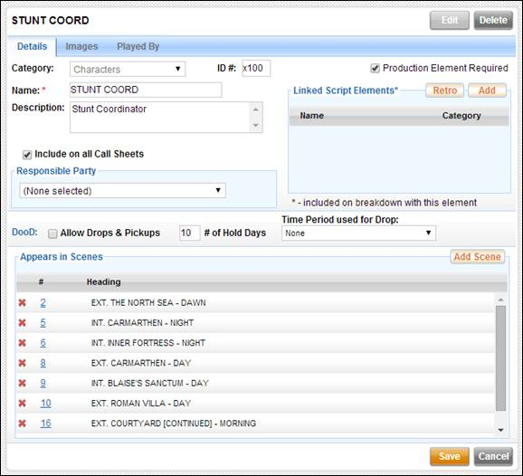

The Script Element
List is the complete list of script elements in the script. As the script breakdown is completed,
elements added to each scene are added to this master script element list. The list displays each element’s name, the
number of times (X’s) it appears in the script, the Production Element status,
and the element category. In the case of
Character elements, a Cast ID is displayed.
There are 21
categories of script elements. Some of
the more common categories are Characters, Props, Costumes, and Sets. You can filter the element list using the
category dropdown at the top of the list.
A script element’s production
element status displays whether or not a production element (such as a
location, prop, or cast member) has been selected to play the script
element. It is represented by either a
red flag, green checkmark, or dashed line.
·
Red Flag: A production element is required for this script element and one has
not yet been selected. For example, a
character role has not yet been cast, or a location has not yet been chosen.
·
Green Check: A production element is required for this
script element and one has been found and selected.
·
Dashed Line: A production element is not required for this
script element. This typically means
that the script element is not significant enough to require the production to
track the status of the production element.
This is a determination made by the production using the Production Element Required checkbox on
the Script Element screen.
This checkbox is
located above the Script Element list.
Orphaned elements are script elements that are no longer in any
scenes. If you wish to include these
elements in your list, select this option.
There are two ways
to create a new script element – from the breakdown page edit screen using the elements
table, or from the Script Elements list using the Add button. Instructions for
the latter are below.
Use the following steps to create a new script element:
1.
Select
the Add button at the top of the Script Element list.
A new element record is created and opened in the right pane.
2.
Complete
the following fields for the new element:
a.
Select
an element Category
b.
Enter a Name
c.
Enter a Description
d.
Select
whether or not a Production Element is Required
e.
Select
or create a Responsible Party
The Responsible Party is typically the crew member responsible for
locating a production element to play the script element. For example, a Location Scout is responsible
for finding locations for each Set.
f.
Add an
association with a production element using the Played By mini-tab.
i.
Click
the Add button
ii.
Select a
production element from the list and click on the + sign next to that
element
iii.
Select
the Close button
iv.
Using
the dropdown in the Played By table, choose a status for the production
element – Selected, Not Selected, or Candidate.
g.
If the
element is a Character element, edit the DooD (Day out of Days) settings
h.
Edit the
Appears in Scenes data
i.
Add the
element to a scene using the Add Scene button
ii.
Remove
the element from a scene by clicking on the red x next to the applicable scene
i.
Select
the Images mini-tab and add images, if applicable
3.
Select
the Save button in the lower right to save your changes.
The right pane
displays the details of a selected script element.
Select a script
element from the list to view its details on the right. The script element screen contains three
mini-tabs: Details, Images, and Played By.
Script Element View

The Details mini-tab displays the information for a selected script element. This information includes the scenes in which the element appears as well as a list of links to other script elements.
The Images mini-tab
displays images that have been uploaded for the element.
The Played By
mini-tab displays the list of production elements that are under
consideration to portray the script element.
Select the Edit button in the upper right corner
of the screen to edit the selected script element. The script element screen switches to edit
mode allowing you to edit the script element data as needed. Note that the script element category is not
editable. The following fields are
present:
· Category: The Script Element's category (Prop, Vehicle, etc)
·
ID#: The
Cast ID or Element ID number
·
Name:
The name of the Script Element. Script
Elements names are saved in ALL CAPS
·
Description:
A brief description of the Script Element
·
Include
on All Call Sheets: This option is present for Character elements only.
Select this checkbox if you want this Script Element to appear on the front of
every Call Sheet. This option is typically used for Stunt Coordinators
·
Responsible
Party: Select a crew member who is responsible for the Script Element. The Responsible Party is typically the crew
member responsible for locating a production element to play the Script
Element. For example, a Location Scout
is responsible for finding locations for each Set
·
Production
Element Required: Select this if you wish to track if and when a Production
Element is secured to play or portray the Script Element. For example, you may track when a rental
vehicle is secured to portray a vehicle Script Element
Script element
linking is the act of linking two script elements together so that when one
element is added to a scene, the other appears with it.
Linked elements have
a parent-child relationship, meaning that one element is considered the parent
and the other is the child. When you
create a new link, the element you are linking from is the parent and the
element you are linking to is the child.
The child follows the parent but the parent does not follow the
child. Consider the following example:
Character element JOHN always wears a HAT.
We view the character element JOHN and, from that screen, create a
link to the HAT.
In this link, JOHN is the parent and the HAT is the child.
From this moment forward when we add JOHN to a scene the HAT
is added as well.
Retroactive script
element linking allows you to retroactively add a linked element to all of the
scenes of the parent element. For
example if character JOHN is already present in 70 scenes when you link JOHN
to the HAT, you can use the Retro button to immediately add the HAT
to those 70 scenes.
Use the following
steps to link an element retroactively:
1.
Create
the link to the other script element.
This element is the child element.
2.
Click on
the Retro button.
The Add Linked Elements to Scenes popup window appears.
3.
Place a
checkmark next to the element(s) you want added retroactively.
4.
Click on
the Make Retroactive button.
The selected child elements are added to all scenes that the parent element
is already a part of.
DooD settings are
only available for Characters. Use these
settings to determine if you will allow Drops and Pickups for the character,
the number of Hold days, and if a Drop is used, the date range for the Drop.
The Time Period
Used for Drop field will display all potential drop date ranges with the
total number of days in each range.
You can add the
script element to one or more scenes using the Appears in Scenes table.
1.
Select
the Add Scene button.
The Add Element to Scene popup window appears.
2.
Click on
the + sign next to all of the scenes to which you want to add the script
element.
3.
Click on
the Close button.
4.
Select
the Save button to save your changes.
To remove the script element from a scene, locate the scene in the Appears in Scenes table and click on the red x next to the applicable scene. Then select Save.
Note: Script elements of the category Set may not be removed from a scene via the above method. Sets may be changed on the breakdown page screen.
1. Select the Images mini-tab.
2. Click on the New Image button.
The Add New Image popup window appears.
3. Use the controls to select and upload an image file.
The image is added to the script element record.
4. Select Save to save the changes.
1. Select the Images mini-tab.
2. Locate the image you want to delete and click on the Delete Image button.
The Delete Image popup window appears prompting you to confirm.
3. Click the Delete button to confirm.
The image is removed from the script element record.
4. Select Save to save the changes.
Using the Played By mini-tab you can associate one or more production elements to the script element. These production elements are candidates to play the part of the script element in front of the camera. Examples of production elements are cast members who play characters or locations that represent sets.
1.
Click
the Add button.
A list of production elements of the appropriate element category appears
in a popup.
2.
Select a
production element from the list and click on the + sign next to that
element.
3.
Select
the Close button.
4.
Using
the dropdown in the Played By table, choose a status for the production
element – Selected, Not Selected, or Candidate.
5.
Select
the Save button to save your changes.
1.
Locate
the production element from the table and click on the red x icon next to that
element.
2.
Select
the Save button to save your changes.
Select the Delete button in the upper right corner
of the screen to delete the selected script element. The Delete
Script Element popup window prompts you to confirm. Click on the Delete button to delete the script element.
Warning: Once a script element has been deleted, it cannot be restored.
Related Topics